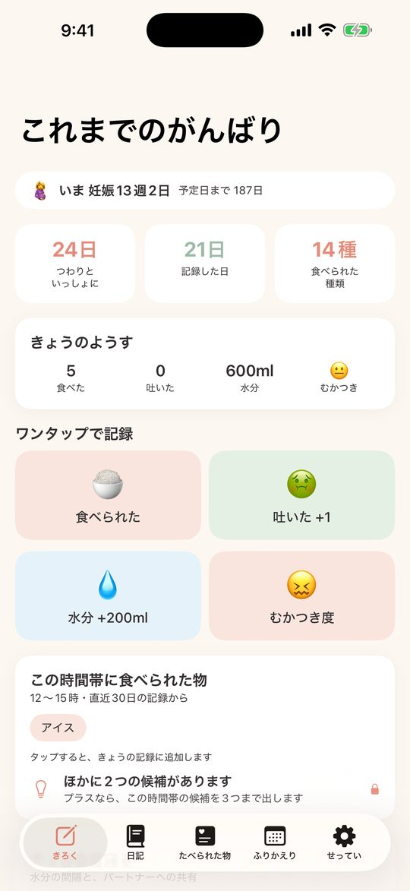
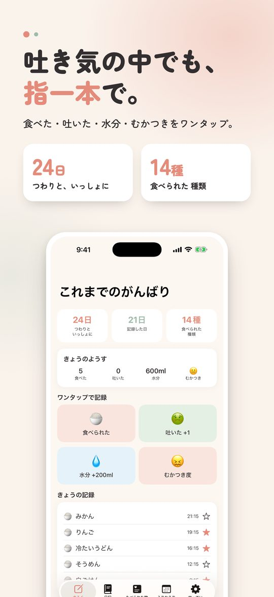
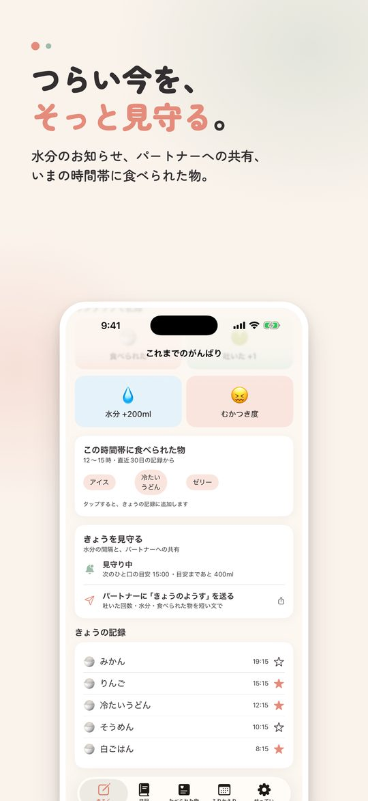
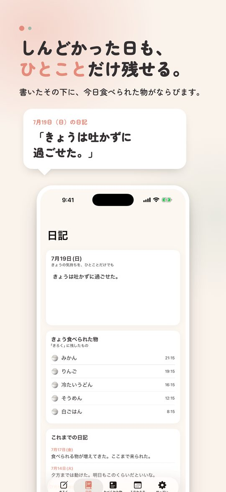
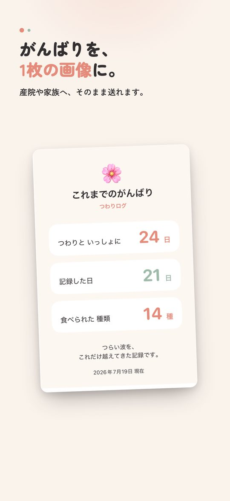
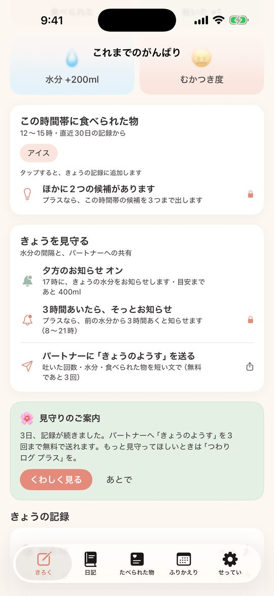
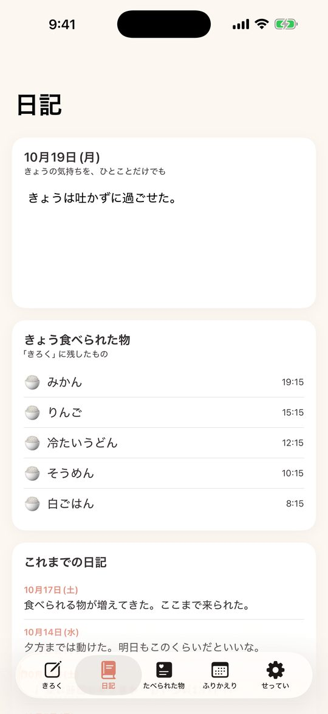
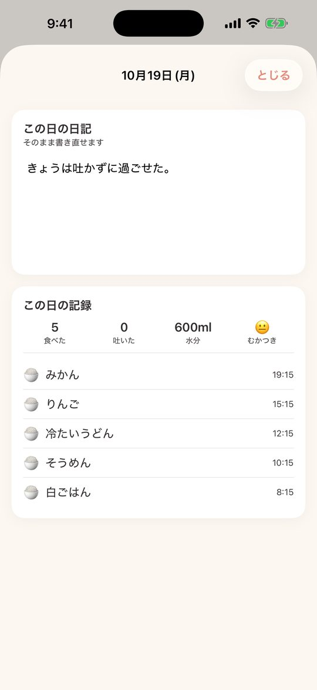
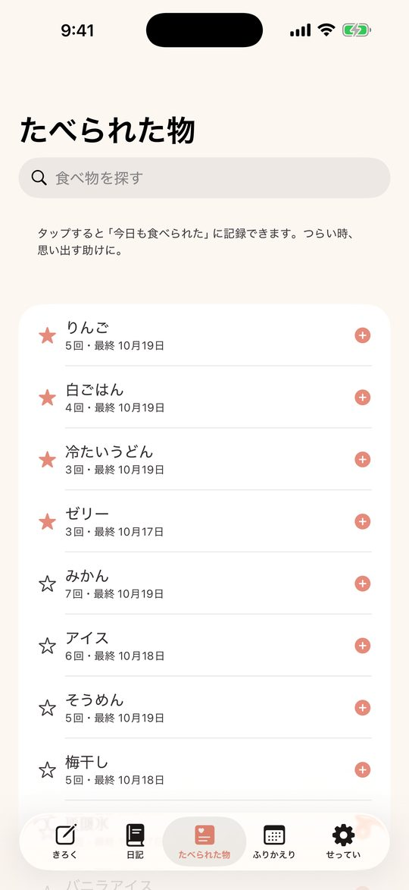
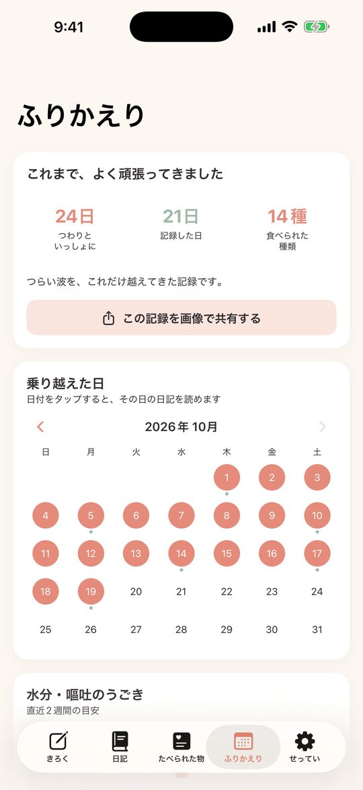

食べられた物・水分・嘔吐・日記をやさしく記録
つらい時期は、指一本でだいじょうぶ。食べられた物・吐いた回数・水分を、吐き気の中でもワンタップ記録。その日の気持ちは日記にひとことだけ。あとで見返すと「これだけ耐えた」が残ります。データは端末の中だけ。共有はあなたが選んだ時だけ。
App Store からダウンロード無料でダウンロード。追加機能は買い切り（¥580）で解放できます。










つわりの毎日を、指一本で。
「つわりログ」は、つわり期の《食べられた物・吐いた回数・水分・むかつき度》を、吐き気の中でもワンタップで残せる記録アプリです。気合いは要りません。つらい時ほど、そっと寄り添います。
＜ワンタップ記録＞
食べられた／吐いた・嘔吐＋1／水分＋200ml／むかつき度を、大きなボタンでポンと記録。名称は履歴からサジェスト、量や時刻は任意です。
＜「これなら食べられた」リスト＞
食べられた物が頻度・お気に入り順にたまり、タップで今日にもう一度記録。つらくて何も浮かばない時、次の一口の助けになります。
＜その日の気持ちを、日記に＞
しんどかったこと、少し楽だったこと。ひとことだけでも残せます。書いたすぐ下に、その日食べられた物がならぶので、思い出しながら書けます。カレンダーから、あの日の日記を読み返すこともできます。
＜乗り越えた日カレンダー＞
記録した日や日記を書いた日にしるしがつき、「乗り越えた日」が少しずつ増えていきます。つらい波を、これだけ越えてきた——その軌跡が目に見えます。
＜そっと肯定するひとこと＞
記録するたびに、そっと。「今日もよく頑張ったね」。過剰でなく、静かに寄り添います（オフにもできます）。
＜いま何週目かが、ひと目＞
出産予定日を設定すると、ホームに「いま 妊娠◯週◯日」を表示。予定日までの日数もわかります。
＜水分の見守り通知＞
17時に、きょうの水分と目安までの残りをお知らせ（無料）。プラスなら、8〜21時の間で前の水分から3時間あいたときにも、そっとお知らせします。目安に届いた日は鳴りません。
＜パートナーへ「きょうのようす」＞
吐いた回数・水分・食べられた物を短い文にして送れます。しんどい日に、説明しなくて済みます（3回まで無料でお試しいただけます）。
＜この時間帯に食べられた物＞
「何なら食べられそう？」に、あなたの記録が答えます。いまの時間帯に食べられた物をホームで提案し、タップでそのまま記録（いちばんの候補は無料、プラスなら3つまで）。
＜診察で見せる1枚＞
直近2週間の嘔吐回数・水分・むかつき・食べられた物を表にして、産院でそのまま見せられます。CSVでも書き出せます。日記の文章は含まれません。
＜脱水の目安＞
吐いた回数が多い日や水分が少ない日に、ホームでそっとお知らせ。医療的な判断はせず「相談の目安」に留めます（どなたでも使えます）。
＜つらい時間帯の見える化＞
むかつきや嘔吐が出やすい時間帯をヒートマップで表示。「夕方がつらい」が目に見えるので、家族への説明にも役立ちます。
＜バックアップの控え＞
全記録をファイル1つに書き出して、控えとして保管できます。
つわりは、がまんの時期。だからこのアプリは、ただの実用ログにしません。あとから見返したとき、「これだけ耐えた。頑張ってよかった」と思える"耐えた証"になるように作りました。誇りの軸は、結果ではなく、あなたが耐えたこと そのものに置いています。
医療的な判断はしません。水分や嘔吐の可視化は「目安」であり、気になるときは受診の目安としてお使いください。
記録はすべて端末の中だけに保存されます。ログイン不要・完全オフライン。産院や家族への共有・エクスポートは、あなたが選んだ時だけ行われます。
記録・日記・お気に入り・カレンダー・記念カードの共有・脱水の目安は無料でずっと使えます。見守りも、まず無料で試せます。
買い切りの「つわりログ プラス」で、さらに見守ります。
つらい時期を、いっしょに越えていきましょう。
無料でダウンロード。追加機能は買い切り（¥580）で解放できます。
お使いの iPhone の中にのみ保存されます。アカウント登録もログインも不要です。
iPhone（App Store から入手）。
メール suportapps44@gmail.com までご連絡ください。